Plots a ggplot2 object in 3D by mapping the color or fill aesthetic to elevation.
Currently, this function does not transform lines mapped to color into 3D.
If there are multiple legends/guides due to multiple aesthetics being mapped (e.g. color and shape), the package author recommends that the user pass the order of the guides manually using the ggplot2 function "guides()`. Otherwise, the order may change when processing the ggplot2 object and result in a mismatch between the 3D mapping and the underlying plot.
Using the shape aesthetic with more than three groups is not recommended, unless the user passes in custom, solid shapes. By default in ggplot2, only the first three shapes are solid, which is a requirement to be projected into 3D.
plot_gg(ggobj, width = 3, height = 3, height_aes = NULL, invert = FALSE, shadow_intensity = 0.5, units = c("in", "cm", "mm"), scale = 150, pointcontract = 0.7, offset_edges = FALSE, preview = FALSE, raytrace = TRUE, sunangle = 315, anglebreaks = seq(30, 40, 0.1), multicore = FALSE, lambert = TRUE, save_shadow_matrix = FALSE, saved_shadow_matrix = NULL, ...)
| ggobj | ggplot object to projected into 3D. |
|---|---|
| width | Default `3`. Width of ggplot, in `units`. |
| height | Default `3`. Height of ggplot, in `units`. |
| height_aes | Default `NULL`. Whether the `fill` or `color` aesthetic should be used for height values, which the user can specify by passing either `fill` or `color` to this argument. Automatically detected. If both `fill` and `color` aesthetics are present, then `fill` is default. |
| invert | Default `FALSE`. If `TRUE`, the height mapping is inverted. |
| shadow_intensity | Default `0.5`. The intensity of the calculated shadows. |
| units | Default `in`. One of c("in", "cm", "mm"). |
| scale | Default `150`. Multiplier for vertical scaling: a higher number increases the height of the 3D transformation. |
| pointcontract | Default `0.7`. This multiplies the size of the points and shrinks them around their center in the 3D surface mapping. Decrease this to reduce color bleed on edges, and set to `1` to turn off entirely. Note: If `size` is passed as an aesthetic to the same geom that is being mapped to elevation, this scaling will not be applied. If `alpha` varies on the variable being mapped, you may want to set this to `1`, since the points now have a non-zero width stroke outline (however, mapping `alpha` in the same variable you are projecting to height is probably not a good choice. as the `alpha` variable is ignored when performing the 3D projection). |
| offset_edges | Default `FALSE`. If `TRUE`, inserts a small amount of space between polygons for "geom_sf", "geom_tile", "geom_hex", and "geom_polygon" layers. If you pass in a number, the space between polygons will be a line of that width. Note: this feature may end up removing thin polygons from the plot entirely--use with care. |
| preview | Default `FALSE`. If `TRUE`, the raytraced 2D ggplot will be displayed on the current device. |
| raytrace | Default `FALSE`. Whether to add a raytraced layer. |
| sunangle | Default `315` (NW). If raytracing, the angle (in degrees) around the matrix from which the light originates. |
| anglebreaks | Default `seq(30,40,0.1)`. The azimuth angle(s), in degrees, as measured from the horizon from which the light originates. |
| multicore | Default `FALSE`. If raytracing and `TRUE`, multiple cores will be used to compute the shadow matrix. By default, this uses all cores available, unless the user has set `options("cores")` in which the multicore option will only use that many cores. |
| lambert | Default `TRUE`. If raytracing, changes the intensity of the light at each point based proportional to the dot product of the ray direction and the surface normal at that point. Zeros out all values directed away from the ray. |
| save_shadow_matrix | Default `FALSE`. If `TRUE`, the function will return the shadow matrix for use in future updates via the `shadow_cache` argument passed to `ray_shade`. |
| saved_shadow_matrix | Default `NULL`. A cached shadow matrix (saved by the a previous invocation of `plot_gg(..., save_shadow_matrix=TRUE)` to use instead of raytracing a shadow map each time. |
| ... | Additional arguments to be passed to `plot_3d()`. |
Opens a 3D plot in rgl.
#>ggdiamonds = ggplot(diamonds, aes(x, depth)) + stat_density_2d(aes(fill = stat(nlevel)), geom = "polygon", n = 100, bins = 10,contour = TRUE) + facet_wrap(clarity~.) + scale_fill_viridis_c(option = "A")plot_gg(ggdiamonds,multicore=TRUE,width=5,height=5,scale=250,windowsize=c(1400,866), zoom = 0.55, phi = 30) render_snapshot()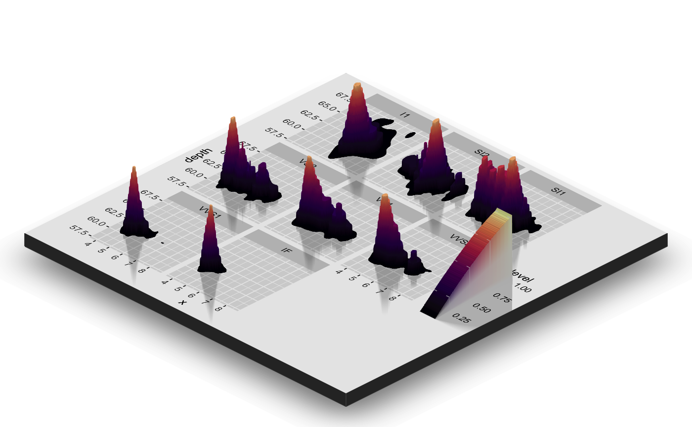#Change the camera angle and take a snapshot: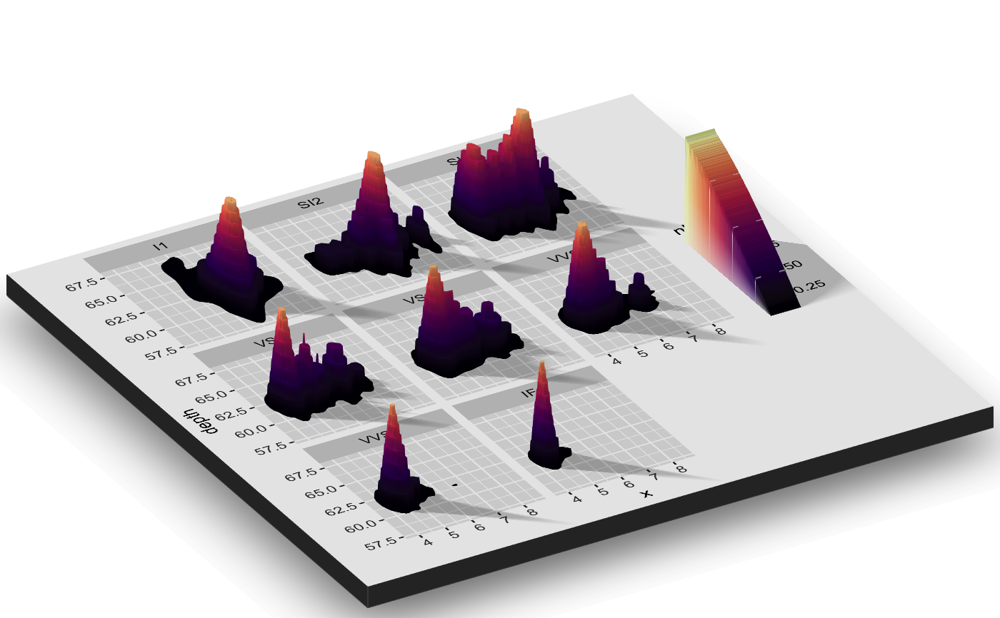#Contours and other lines will automatically be ignored. Here is the volcano dataset: ggvolcano = volcano %>% reshape2::melt() %>% ggplot() + geom_tile(aes(x=Var1,y=Var2,fill=value)) + geom_contour(aes(x=Var1,y=Var2,z=value),color="black") + scale_x_continuous("X",expand = c(0,0)) + scale_y_continuous("Y",expand = c(0,0)) + scale_fill_gradientn("Z",colours = terrain.colors(10)) + coord_fixed() ggvolcano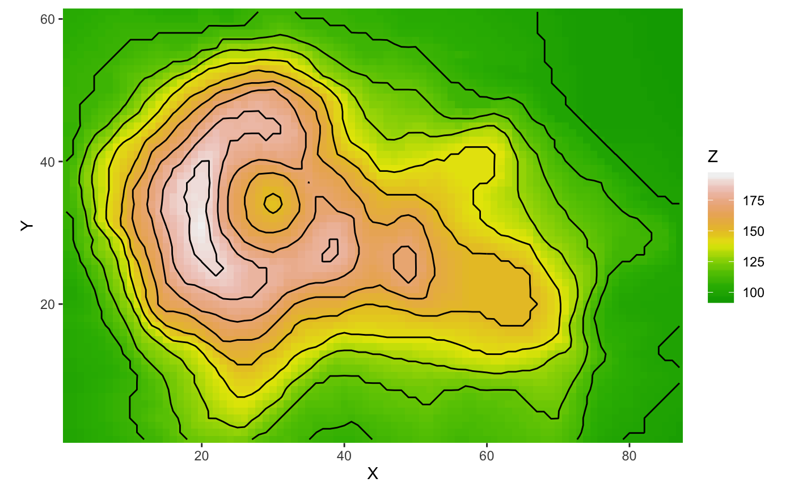plot_gg(ggvolcano, multicore = TRUE, raytrace = TRUE, width = 7, height = 4, scale = 300, windowsize = c(1400, 866), zoom = 0.6, phi = 30, theta = 30)#> Warning: Removed 1861 rows containing missing values (geom_path).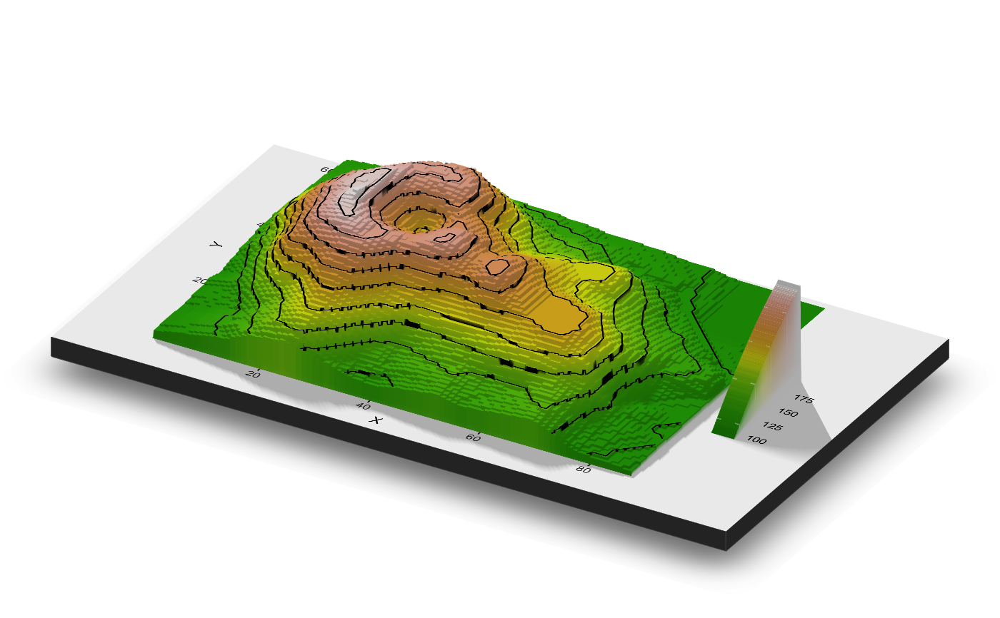#Here, we will create a 3D plot of the mtcars dataset. This automatically detects #that the user used the `color` aesthetic instead of the `fill`. mtplot = ggplot(mtcars) + geom_point(aes(x=mpg,y=disp,color=cyl)) + scale_color_continuous(limits=c(0,8)) #Preview how the plot will look by setting `preview = TRUE`: We also adjust the angle of the light.plot_gg(mtplot, width=3.5, sunangle=225, preview = TRUE)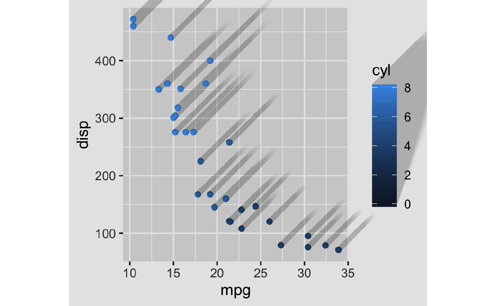plot_gg(mtplot, width=3.5, multicore = TRUE, windowsize = c(1400,866), sunangle=225, zoom = 0.60, phi = 30, theta = 45) render_snapshot(clear = TRUE)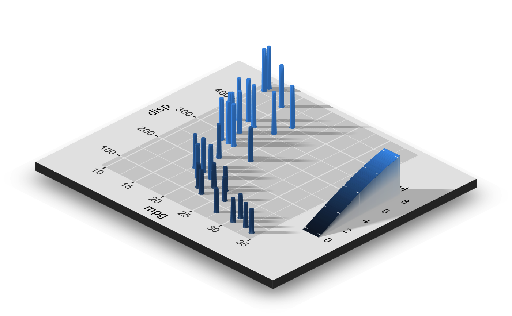#Now let's plot a density plot in 3D. mtplot_density = ggplot(mtcars) + stat_density_2d(aes(x=mpg,y=disp, fill=..density..), geom = "raster", contour = FALSE) + scale_x_continuous(expand=c(0,0)) + scale_y_continuous(expand=c(0,0)) + scale_fill_gradient(low="pink", high="red") mtplot_density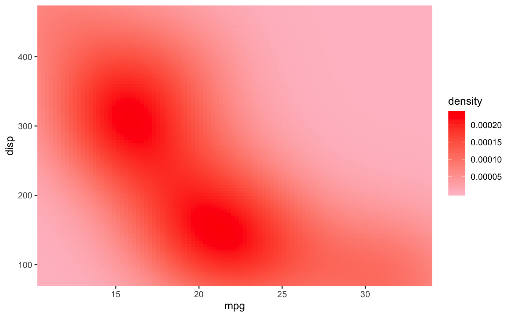plot_gg(mtplot_density, width = 4,zoom = 0.60, theta = -45, phi = 30, windowsize = c(1400,866)) render_snapshot(clear = TRUE)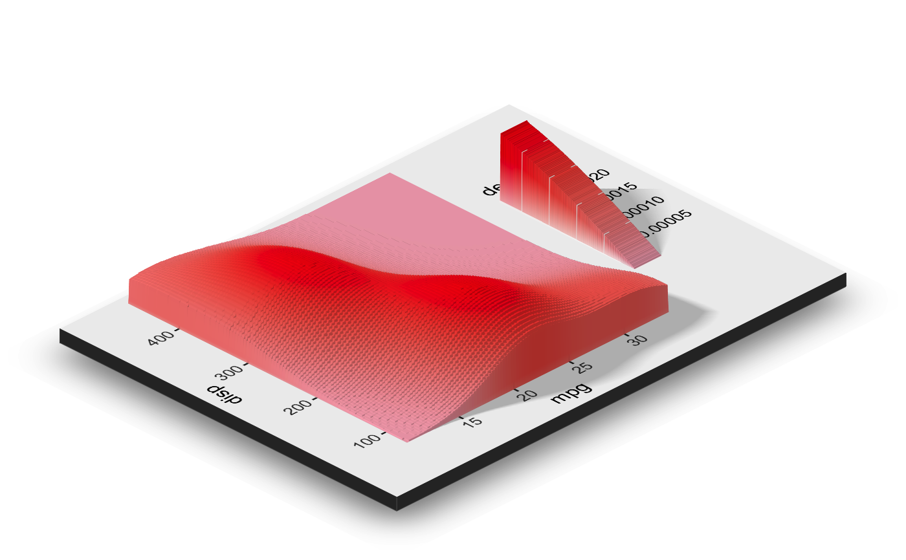#This also works facetted. mtplot_density_facet = mtplot_density + facet_wrap(~cyl) #Preview this plot in 2D:plot_gg(mtplot_density_facet, preview = TRUE)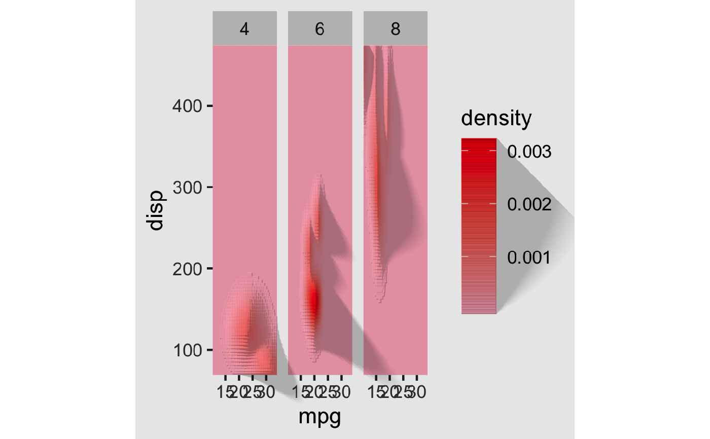plot_gg(mtplot_density_facet, windowsize=c(1400,866), zoom = 0.55, theta = -10, phi = 25) render_snapshot(clear = TRUE)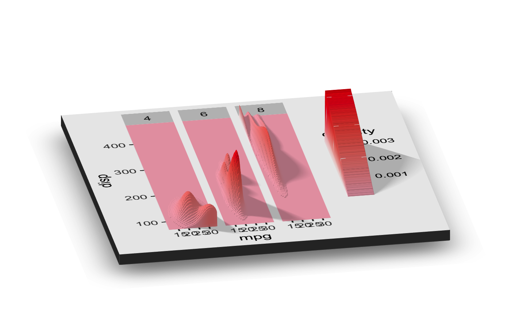#That is a little cramped. Specifying a larger width will improve the readability of this plot.plot_gg(mtplot_density_facet, width = 6, preview = TRUE)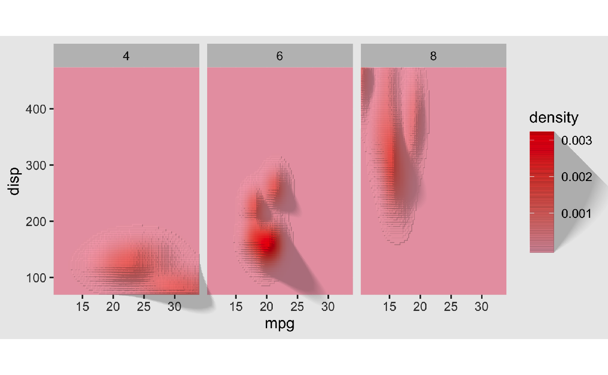#That's better. Let's plot it in 3D, and increase the scale.plot_gg(mtplot_density_facet, width = 6, windowsize=c(1400,866), zoom = 0.55, theta = -10, phi = 25, scale=300) render_snapshot(clear = TRUE)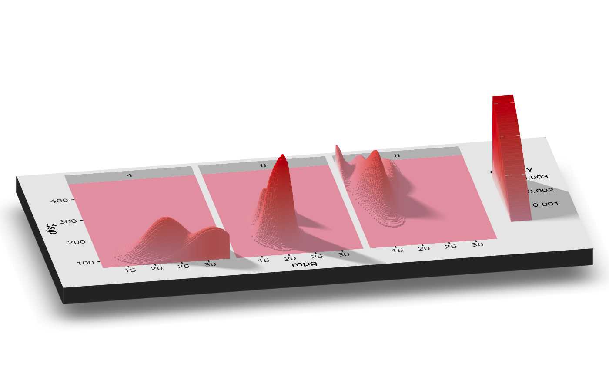